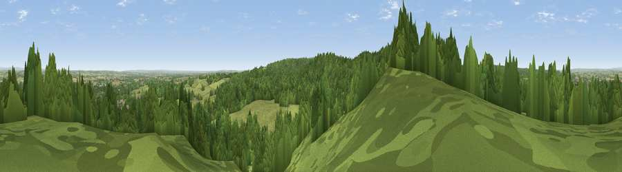

Viewpoint near Brereton
#20594 in England · top 17% of its area beats it · near BreretonThe view, rendered

A 360° render of this exact spot computed from the terrain model, tree cover and land cover — summer colours, afternoon light, calibrated against photographs of famous viewpoints. Real trees, hedges and buildings will differ in detail.
The panorama
Grey silhouette: terrain skyline in each direction (720 bearings, Earth curvature and refraction included). Dashed green: skyline with trees (+15 m) and buildings (+8 m) as obstacles. Blue strip: how far the ground is visible on each bearing.
Where the view opens
Wedge length = distance to the farthest visible ground on that bearing (vegetation-aware). Rings at 10, 25 and 50 km.
What fills the view
58% woodland · 31% grassland · 6% built-up · 5% cropland
Angular shares of the visible panorama (visual magnitude), not map area. Landscape diversity 0.44 (0–1 Shannon).
Key numbers
More beautiful places nearby
The staircase of upgrades: each row has a higher view potential than everything closer. Driving times are estimates from straight-line distance, calibrated against real road routing — check an actual route before setting out.
| Place | Direction | Drive | Score |
|---|---|---|---|
| Viewpoint near Upper Longdon | S · 1 km | ~4 min | 55.9 |
| Viewpoint near Prospect Village | SSW · 4 km | ~10 min | 58.1 |
| Wimblebury Hill | SSW · 5 km | ~10 min | 62.0 |
| Viewpoint near Streetly | S · 18 km | ~31 min | 69.5 |
| Viewpoint near Wootton | N · 31 km | ~48 min | 74.4 |
| Viewpoint near Wootton | N · 31 km | ~48 min | 74.8 |
| Tissington Hill | NNE · 38 km | ~57 min | 75.5 |
| The Ercall | W · 40 km | ~60 min | 79.4 |
52.73869, -1.93590 · source: screening · position refined by local search. Computed location — check access rights before visiting.